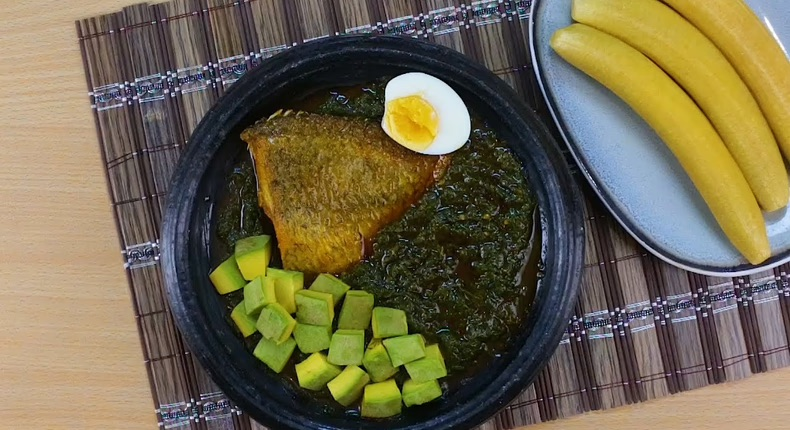

Ampesi Abomu

Ampesi Abomu
This food is called Ebunuebunu; steamed cocoyam leaves, scotch bonnet pepper, onion and salted anchovies are grounded together then hot palm oil is poured over.
Ingredients Needed
- 400g of Organic Spinach or Cocoyam leaves or Kontomire
- 1 sliced large Onion
- 20g of Pettie Belle Chillies (Kpakposhito)
- 185g of Salted Fish (Koobi)
- 150g of tinned Sardines in Tomato sauce
- 30ml of Zomi or Palm oil
- Salt to taste
Steps
- Wash the kontomire leaves well, remove the stalk from the vine and place in a pot.
- Add the tomatoes, onion, pepper and koobi to the pot and add just enough water to steam.
- Steam until the tomatoes, onions and kontomire leaves are tender. Turn off the heat and keep any remaining water left after the steaming.
- Place the chilli, onion and a piece of the koobi in an asanka (earthenware mortar) and mash it with the pestle.
- Add the tomatoes to the mortar. Mash until it is well incorporated with the onion mixture.
- Add the kontomire and mash well into the mixture. If it is too thick, loosen it up with a bit of water from the steaming process.
- Add salt to taste
- Heat palm oil and pour it on the mashed ingredients.
- Serve this sauce with boiled yams, ripe and unripe plantains or cocoyam.